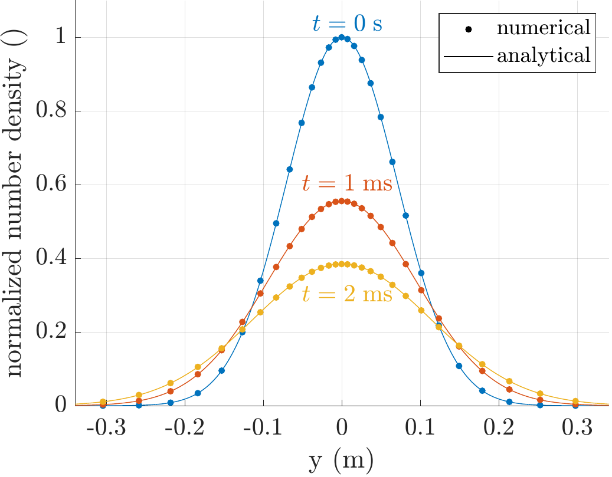

Installation
Download
Here you can download a ZIP folder containing the code. Alternatively, you can clone the repository with git:
> git clone https://github.com/PTL-Unibo/Merlino2D.gitInstallation steps
To use Merlino2D you need MATLAB installed on your computer. You also need to install Gmsh for mesh generation.
The first time using Merlino2D it is necessary to run the script Merlino2D_startup.m that is inside the src/ folder. By running this script, you will be firstly asked to select the gmsh.exe executable that you should have previously installed on your computer. After, you will be asked to select the Code/ folder of the LoKI-B repository, that you should have cloned on your device if you wish to have the option of using the Boltzmann solver for computing swarm parameters and rate coefficients.
If the folder containing the project is moved to another location, you need to run Merlino2D_startup.m again.
Verification
If the installation was successful, you can now run all the examples contained in the cases/ folder (if you also moved the Air.in file inside the Code/Input/ folder of the LoKI-B repository). We suggest that you start by running the script c_Diffusion.m, which should not take a long time and does not require to move the Air.in file. By running that script, a Gmsh window containing a square divided into two half should appear. Closing that window the simulation will start and you should see the following text appearing in the Command Window:
Generated Mesh
Photoionization is OFF
Initialization finished
Updated photoionization, maximum value = 0.000000e+00
Simulation finished
Deleted SquareCenterRefined.mFinally, the following figure should appear:

If you see the above figure appearing without getting any errors, it means that you have successfully installed Merlino2D.